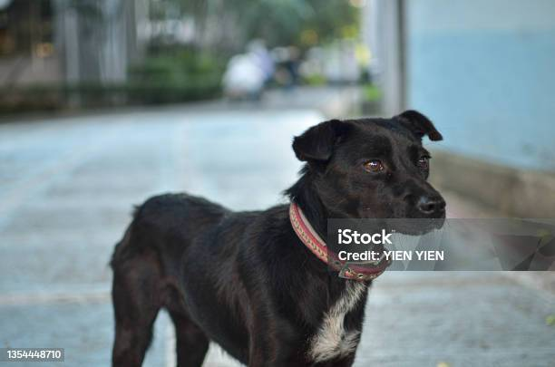

基本資料
台灣犬，又稱台灣土狗，是台灣的原生犬種，歷史悠久，深受台灣人民喜愛。牠們體型中等，毛色多樣，常見的有黃、黑、白、虎斑等。台灣犬性格忠誠、聰明且充滿活力，是優秀的伴侶犬和看門犬。
性格特徵
台灣犬性格忠誠、聰明且充滿活力，是優秀的伴侶犬和看門犬。牠們對主人非常忠誠，容易訓練，適應力強。
肩高:約 43–55 公分，公犬通常略高於母犬。
體重: 約 12–18 公斤，依生活型態與肌肉量略有變動。
飼養方式
控制體重並維持規律運動 台灣犬天生敏捷、耐力佳，若活動量不足或體重過高，容易導致關節退化與行為壓力上升。每日需安排中度至高度運動（散步＋嗅聞＋短距離衝刺），以維持良好肌力與行為穩定。
照顧重點
台灣犬需要定期的體檢和疫苗接種，以預防疾病。提供均衡的飲食，並確保有足夠的運動和休息時間。著重皮膚管理與環境乾燥度控制
因台灣氣候潮濕，皮膚過敏、濕疹與黴菌問題常見。需維持耳朵、腹部與腳縫的乾燥，定期洗澡與吹乾，並避免長時間接觸潮溼草地或積水。
日常照片
